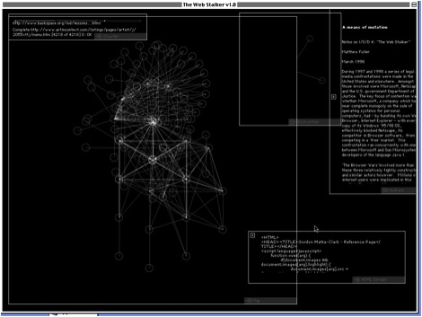
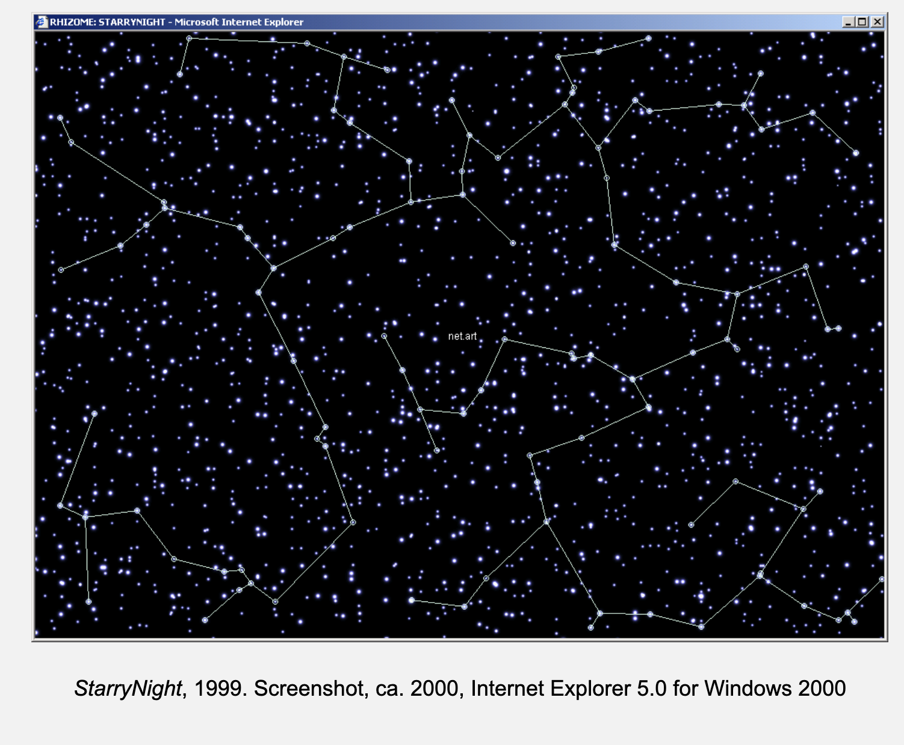
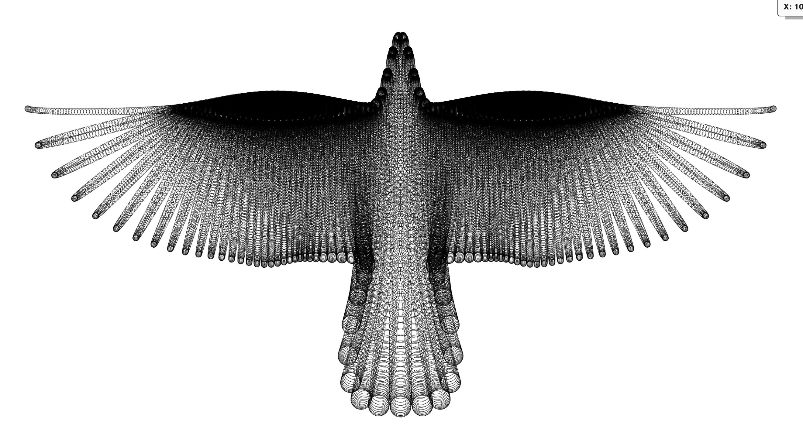
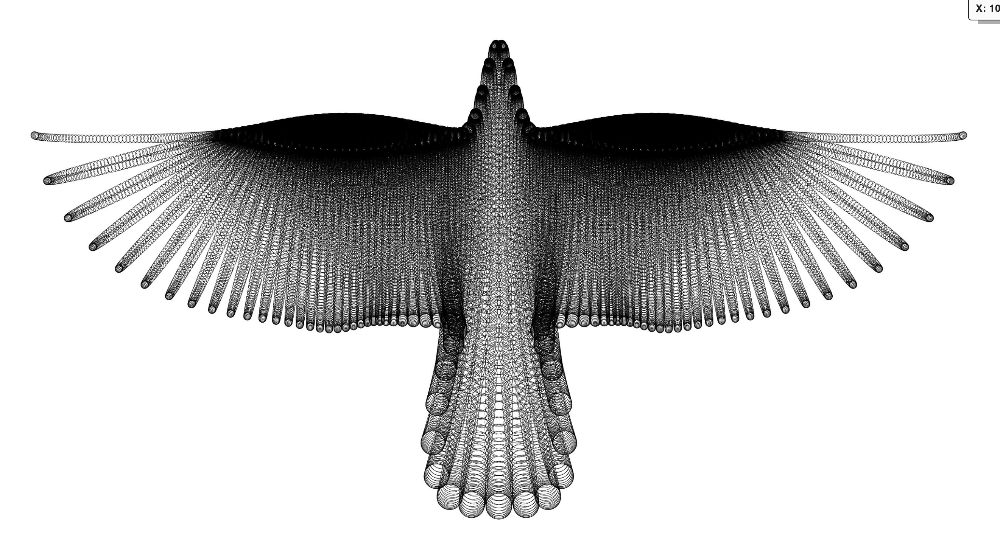

Key inspirations:
Artwork that strips away the Web's content, displayed through the conventional processing of HTML, to reveral its armature in the form of beautiful little geometric patterns, which stand out from the black screen like spiders' webs (again with the digital and physical systems running parallel!) Non-hierachical structure of the internet has provoked theoretical writing that celebrates the playful, limial and deconstructive workds and mental attitudes it spawns.
Depicts a visualisation of the inner workings of a computer, exposing a larger structure at play BEHIND the interFACE.
(SOURCE: Internet Art: The Online Clash of Culture and Commerce - JULIAN STALLABRASS) How this mathematical equation has been used to analyze the proportions of natural objects and artificial systems such as spiral arrangements of leaves and financial markets. How equations can expose the similaities and parallels of the physical and mathmatical (computational) worlds.
I am interested in the intersection of this, the entrance of the liminal space between the physical and digital relms.
As of now, parametric equations have been a good entrance into exploring this concept, allowing a concrete mathmatical equation I can manipulate to explore computer interaction. I am attempting to look at what is behind the interface, what is the nature of a computer and how can I explore this in relation to the natural systems around me.
'StarryNight was developed as an artistic interface for the curated, online archive of Rhizome’s email discussion list, an important forum for artists working with new forms of media in the late 1990s. StarryNight is both a map and a community record. As a navigation tool, it was impossible to use without leaving a trace of which texts the user would pursue and which they would ignore.'' To me this work visualises networks and interconnected systems. Depicting connections between people and placing these connections into a visual realm. A depcition of the parallels between human interaction and how other systems in our world operate.
`Here, we and others describe an unusual neurorobotic project, a merging of art and science called MEART, the semi-living artist.We built a pneumatically actuated robotic arm to create drawings, as controlled by a living network of neurons from rat cortex grown on a multielectrodearray (MEA). Such embodied cultured networks formed a real-time closed-loop system which could now behave and receive electrical stimulation as feedback on its behavior.We used MEART and simulated embodiments, or animats, to study the network mechanisms that produce adaptive, goal-directed behavior. The interfacing technologies and algorithms developed have potential applications in responsive deep brain stimulation systems and for motor prosthetics using sensory components. In a broader context, MEART educates the public about neuroscience, neural interfaces, and robotics. It has paved the way for critical discussions on the future of bio-art and of biotechnology.'
I am interested in this project as it exposes the correlation between technological networks and brain networks, exploring how technology might respond. It correlates the power of the human brain networks, to electrical neurons, briding gaps between the understanding of networks and applications of pathways. Demonstrating the brain as technology and a possible model for how technological systems should be built. I am interested in this intersection. It also questions the idenitiy of an artist, whether the computer can be considered an autonomous artist.
Utilises mathmatical equations to build artworks. I am inspired by his creative use of mathmatics, combining these systems to visualise the inner workings of structures of the universe. I am interested in the way he experiments with the structures of mathmatics in creation, visualising systems in place. I see mathmatical equations as a key an expose of the inner systems of the univserse. To see these systems visualised proves their power in construction. I tie this back to the concept of computing by utilising mathmatic equations as metaphors for the inner workings of a computer. And the depiction of one building block compiling to work and compound with other building blocks as the fundemental for creation.
 

This sketch further demonstrates the interconnectedness of natural systems and computer systems through the visualisation of a tree growing. It exposes the networks and pathways a tree's growth follows, and through coding this process demonstrates the parallels in these systems. As I think about the inter connectedness of the web and reality, the similarities of these concpets becomes more and more evident through the metaphor of equations and nodal networks depicting how different elements react and act together.